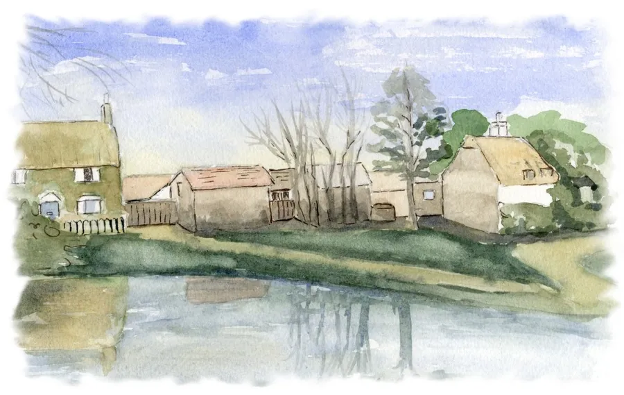
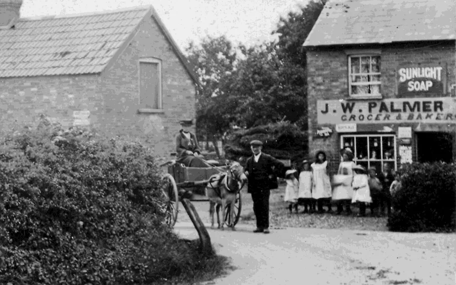
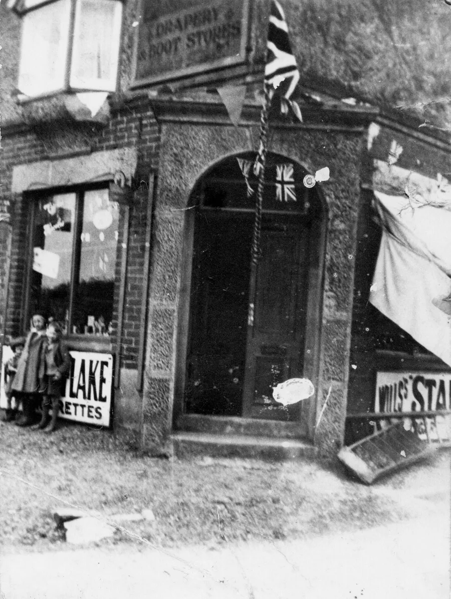
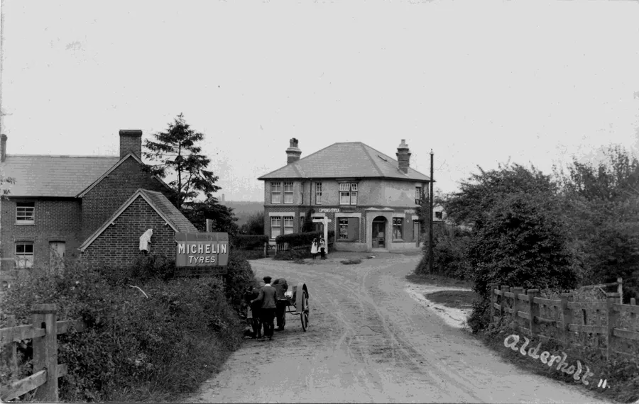
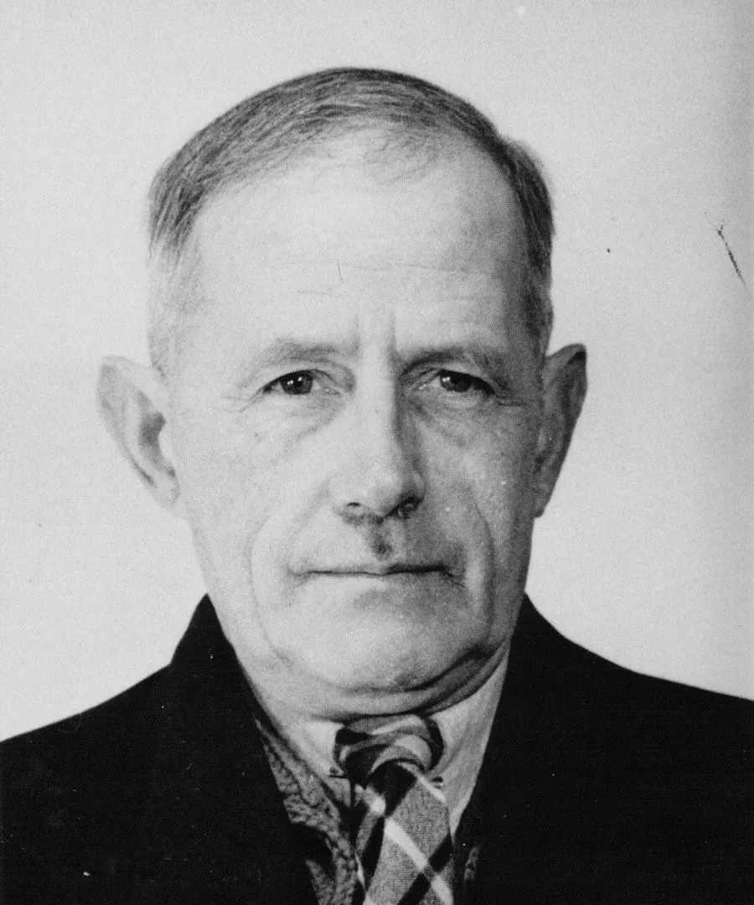
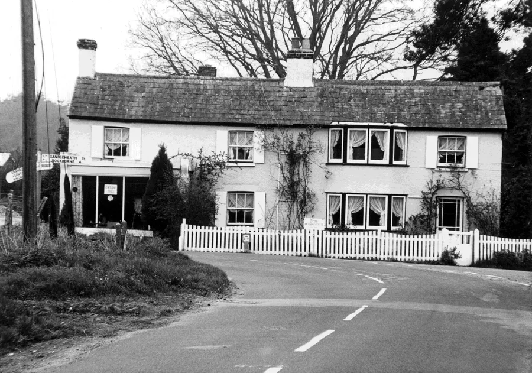
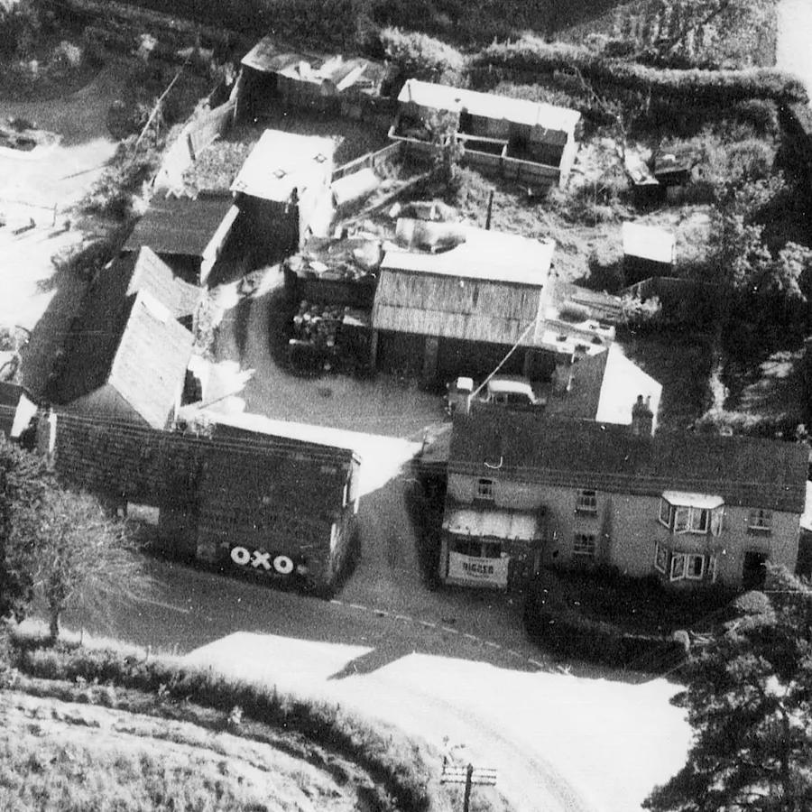
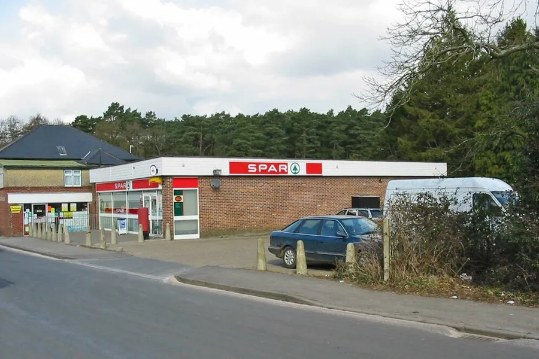
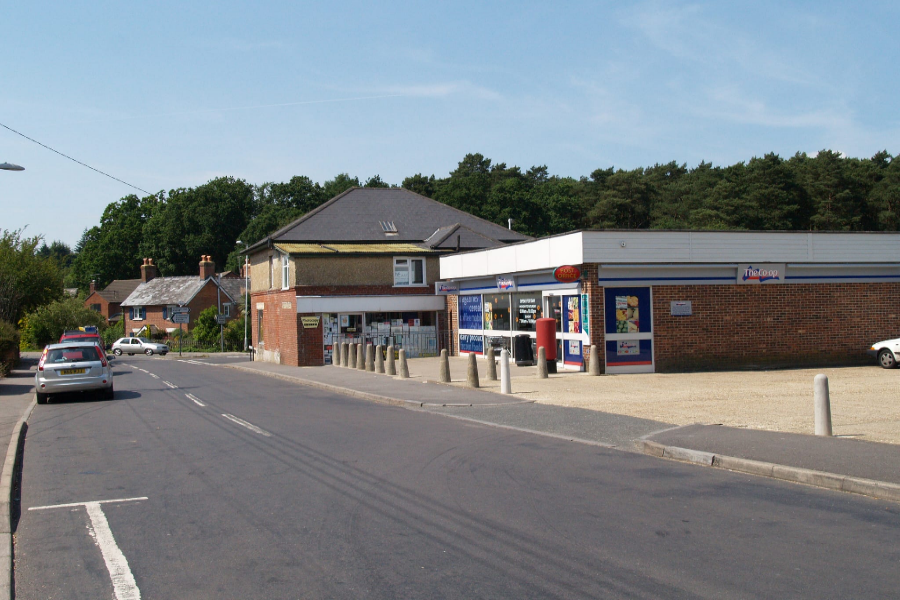
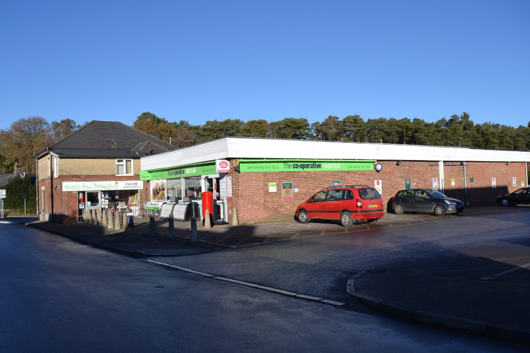

Palmers Stores
by Adrian King

It all started with the iconic picture of Alderholt Corner near Fordingbridge taken about 1905. I will not reproduce the complete picture here.
If you look at the picture you will see a lady in a horse and trap with a man standing by her side and about nine children in front of a shop window.

Undoubtedly this is James William Palmer who owned the shop, his wife Kate and nine of their ten children. James was previously a brickworks manager. Now in his mid-forties he became a grocer after purchasing the store on Alderholt Corner sometime after 1904. His wife Kate (nee Rose) had been born in the village and they were moving home.
Percy Palmer writes
“We children of the family started work in the bakery at an early age. At first a single horse and cart was used for bread deliveries but later we had two.”
Later in 1919 a Ford Van was added.
Percy Palmer was the second youngest and born in Burnham in Buckinghamshire in 1899 when James was managing a brickyard there. In 1908 a local builder Harry Elton built Whiteleaze at Charing Cross and it was originally a drapery and boots shop.
James sadly died on 4th June 1913. Around this time the family bought the shop at Charing Cross from a Mr. Green and in 1915 moved there when Percy was only 16 years old.

Trading as Kate Palmer and Sons the shop probably started selling groceries. Percy was learning the trade of baker but in 1918 he went through selection for the Dorsetshire Regiment at Dorchester. He gained selection in May of that year but probably never saw active service as the war ended a few months later.
In 1928 Percy was best man at the wedding of his cousin Arthur Bailey, my grandfather. Percy married Bessie Hounsell in 1932 and they had three daughters.
A grandson Tim Pattle said that during the war the family
“Had to move out and go to live with an aunt further up Ringwood Road as my grandfather (Percy Palmer) had to house some soldiers up in the attic and whatever room he had.”
A daughter said that
“They were the cooks who fed the soldiers in the village hall and the officers stayed in ‘The Pines,’” a little way up Station Road.
Stan Broomfield can remember that boys used to flatten halfpennies on the railway lines and pass them on as pennies in the store. Percy generally accepted these as legal tender and the boys purchased their four chews.

Who can remember life before the internet and home deliveries? Always innovative, Percy thought that the time was right to purchase an Austin J4 van and he went around the local area with a mobile shop. He also delivered grocery orders which were phoned through and assembled by the staff. Tim can remember delivering to my parents at Cripplestyle with his grandfather.
A couple of Ford Anglia estates and then an Austin 1300 Countryman were added to the fleet. But the world was not quite ready for home delivery and the venture was only for a short while.
For some years the shop was a ViVo Store but in 1976 a new store was built next to the original shop with further development after 2010 with a larger car park.
Percy Palmer died in 1980.

When the new shop was built it became an agent for SPAR but in 2007 the Southern Co-op took over the running of the shop. Since 1996 the store has housed the Post Office Counter which was originally at South Lodge then opposite the Churchill Arms at the Halt.
For many years the original premises held a nearly new children’s merchandise shop but this closed in the early spring of 2025.


The family sold the bakery on Presseys Corner to Thomas William Pressey after they moved to Charing Cross. It was after this that we get the corner's common name changing from Alderholt to Presseys Corner. Another owner was Mr. James and it was still open as a bakery during the 1960’s and 70’s. Tim Pattle can just remember it being open as a bakery.
“Mum used to send me down on a Saturday to get a fresh loaf. The trouble was I always had to go a second time as by the time I got home the loaf was hollow.”
In the last forty years the property was the Moonacre Restaurant but it is now a house.

Picture taken by Clive Perrin in 2005.

